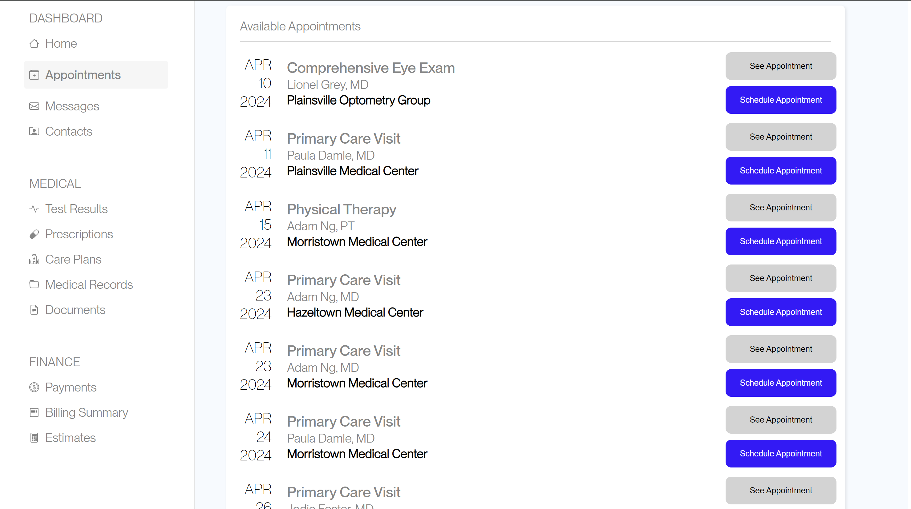

A/B Testing Studio
To begin, my peers and I first used the Version A website to schedule an appointment without seeing the interface ahead of time. Then, after using the interface, I made small changes to the interface, including changing the color of the buttons to make them more readable and clear, and changing the boldness of the location of the appointment to reduce confusion. After making these changes, I tested my website for speed and accuracy by having others use it to complete the same task of scheduling an appointment.
Version A (Original)

Version B (Edited)
Hypotheses
Using the data collected during the A/B Testing studio, I made hypotheses based on what I believe I will find after testing the data.
Metrics
- Misclick Rate - the frequency with which users click something else on the page before finding the correct button for the task
- Time on Page - time spent on the webpage for each user group
- Number of Clicks - how many times users clicked on the page
My metric of choice is the number of clicks users used to complete the task. I chose this because I noticed that there was a large variety of clicks used to complete the task, especially in the A task, and I wanted to see what the data looked like comparing the two in terms of clicks. In addition, I think that this is a useful metric because if it takes less clicks, then it can be easier for the user to complete.
Null and Alternative Hypotheses
- Misclick Rate
-
- Null Hypothesis - The misclick rate is the same in sample A and sample B.
- Alternative Hypothesis - The misclick rate from sample A is different than the misclick rate from sample B.
- Justification - I made this alternative hypothesis because in version A, no one knew how the website worked and it was a confusing interface so more people were more likely to misclick. However, in version B, the interface was more clear and understandable, so it is likely that there was a smaller misclick rate, so the misclick rate will likely differ.
- Time on Page
-
- Null Hypothesis - The time spent on page is the same in sample A and sample B.
- Alternative Hypothesis - The time spent on page is greater in sample A than in sample B.
- Justification - I made this alternative hypothesis because in version A, people are more likely to make mistakes because the interface is new and confusing, leading them to spend more time on the page especially if they misclick and make mistakes. On the other hand, if version B is easier to use and understand, users will be able to complete the task in a shorter amount of time because the steps are more clear.
- Number of Clicks
-
- Null Hypothesis: The number of clicks used to complete the task is the same in sample A and sample B.
- Alternative Hypothesis: The number of clicks used to complete the task is greater in sample A than sample B.
- Justification - I made this alternative hypothesis because in version A, people are more likely to make mistakes and end up clicking multiple things, which will increase the number of clicks. On the other hand, in version B, people will be more likely to find what they are looking for and click a smaller amount of times to get there because the interface is more intuitive through making the buttons and hospital locations more readable.
Predictions
- Misclick Rate
-
- I believe that I will end up rejecting the null hypothesis based on the data. In the data from Version A, about one half of people misclicked at least once during their attempt. However, during Version B testing, no users misclicked. Through testing this data, I expect that the p-value will indicate that the difference between these two findings is significant. Because of this, I expect to reject the null hypothesis that the misclick rate for Version A and Version B are the same.
- Time on Page
-
- I believe that I will end up rejecting the null hypothesis after looking at the data for each version. From version A testing, the majority of data points are over 20,000 milliseconds. However, in Version B testing, the users rarely exceeded 10,000 milliseconds on the page. Due to this large difference I witnessed in the data, I expect that through the tests, the p-value will indicate that the amount of decrease in time on page from Version A to Version B is significant . Thus, I expect to reject the null hypothesis which states that the time on page in Version A and Version B is the same.
- Number of Clicks
-
- I believe that I will end up rejecting the null hypothesis through viewing the data from each version. I noticed that in the version A data, there was a large difference in the number of clicks different people took to complete the task, ranging from 2 to 26. On the other hand, in the Version B data, there was little variability in the number of clicks, as people only used 2-4 clicks. Because of this large difference in the number of clicks used in the different versions, I believe that the p-value will indicate that the amount of decrease in the number of clicks from Version A to Version B is significant. Through this, I expect to reject the null hypothesis which states that the number of clicks in Version A and Version B is the same.
Statistical Tests
After creating my hypotheses, I ran statistical tests on the metrics explained above to learn the impact of my A/B testing.
Misclick Rate
For the misclick rate, I chose to run a chi squared test because
misclick can be represented as a boolean value which can be split
into two categories: did misclick and did not misclick. In sample
A, 12 users misclicked and 12 users did not misclick. In sample B,
0 users misclicked and 22 users did not misclick.
Because the p-value is less than 0.05, the difference between versions A and B
with respect to misclick rate is significant. We can come to the
same conclusion through using the chi square statistic as well,
which is 14.88. Using the degree of freedom, we can find the
critical value of chi^2 to be 3.841, which is less than the chi^2
value, so the magnitude of difference between the two groups is
significant.
Because the p-value is significant and the chi-square statistic is
significant, we find statistically significant evidence that the
alternative hypothesis is true.
| Outputs | |
|---|---|
| df | 1 |
| chi^2 | 14.88 |
| p-value | 0.00011 |
Time on Page
I chose to run a one-tailed t-test for the time on page because
this piece of information is a number, not a category, and I
believe that the most important information can be gleaned from
understanding if the version B time on page is smaller than
version A. Doing a two-tailed t-test would tell me only if they
are significantly different, but in this case I want to see if
version B is an improvement.
Using this test, the outputs are noted in the table. These results
show that the degrees of freedom for this metric is approximately
24. This means that there are 24 pieces of information to estimate
the variability in the data which impacts the critical values of
the t-distribution, and the higher degrees of freedom, the closer
the t-distribution resembles the normal distribution. Next, the
t-score is 9.578, and the p-value when A is less than B is
0.99999. Because my alternative hypothesis states that A>B, and
these outputs are for when A is less than B, I will do 1-p to get
my p-value of approximately 0.00000.
Because the p-value for this metric is less than or equal to the
chosen significan level, 0.05, the amount that A is larger than B
is significant for the time spend on the page. Furthermore, using
the t-value and the degrees of freedom, I can confirm this
p-value.
Because the p-value is significant, I have found statistically
significant evidence that the alternative hypothesis is true.
| Outputs | |
|---|---|
| df | 24 |
| t-value | 9.578 |
| p-value | 0.0000000004 |
Number of Clicks
I chose to run a one-tailed test for the number of clicks on a
page because this statistic is a number, not a category, and I
believe that important information can be taken away from this
metric through understanding if the number of clicks in version B
is smaller than the number of clicks in version A. The degrees of
freedom for this metric is approximately 23, the T-score is 4.12,
and the p-value is 0.9997. Similar to time on page, this data
represents when A is less than B. Similar to time on page, this
data represents A is smaller than B, so I inverted the data to
analyze for my alternative hypothesis which is A is greater than
B. In this case, the p-value equals 0.00021.
Because the p-value is less than or equal to 0.05, we find that
the amount that A is larger than B is significant for the number
of clicks used to complete the task. Furthermore, using the
t-value and the degrees of freedom, I can confirm this p-value.
Because the p-value is significant we find statistically
significant evidence that the alternative hypothesis is true.
| Outputs | |
|---|---|
| df | 23 |
| t-value | 4.11588 |
| p-value | 0.00021 |
Summary Statistics
Conclusions
Through these three metrics, it is likely that version B is better than version A. We see that on average people spend less time completing the task, less misclicks, and less clicks overall using version B. I believe that this difference is due to the changes in the interface in version B, where the two types of options that can be taken “See Appointment” and “Schedule Appointment” are visually much different. In addition, the location of the appointment is made clearer. Doing a two-tailed t-test would tell me if they are significantly different, but in this case where I want to see if version B is an improvement, it is important to me to understand if version B is smaller than version A. The results from the test are indicated in the table to the right.